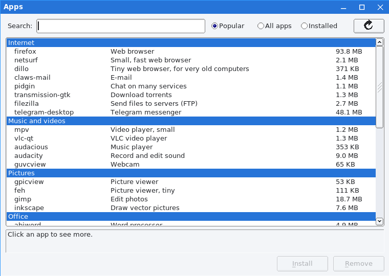
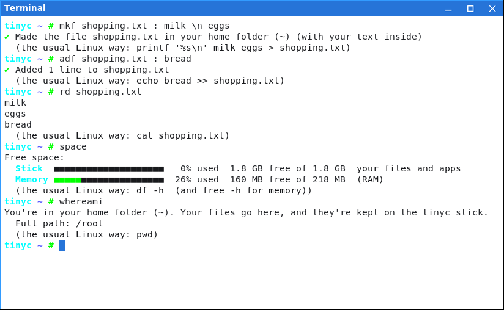
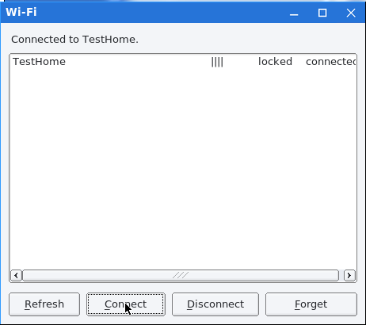
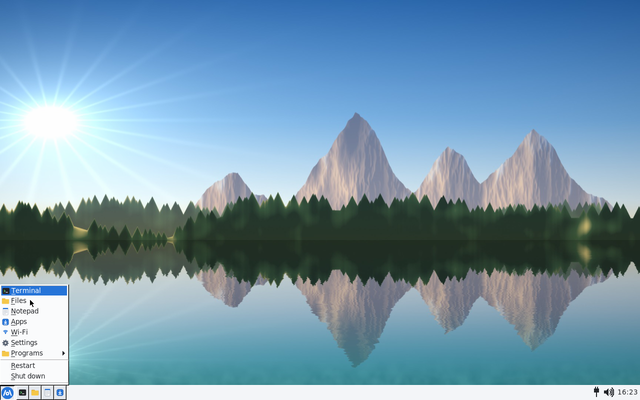

Apps

Settings

The Terminal, with easy commands

Starting up

Wi-Fi
CcOS home > tinyCcOS
[ About | Docs | Install | Download ]
| tinyCcOS 0.1 beta is out! It will even run on a potato. Download it here. It works, but it hasn't been tested on many real computers yet. |
tinyCcOS (or tinyc for short) is a tiny version of CcOS, inspired by Tiny Core Linux. It does the normal things a computer should do, it just isn't fancy about it.

| tinyc | |
|---|---|
| Computer | 64-bit (most computers from about 2008 on), old BIOS or newer UEFI. Older 32-bit computers (Pentium 4, Pentium M, Atom...): use the separate 32-bit version. |
| Memory | 256 MB is enough. With the desktop and a Terminal open, about 165 MB is still free. |
| USB stick | at least 2 GB (tinyc itself uses about 130 MB; the rest is for your files and apps) |
| Wi-Fi | Intel, Realtek and Atheros USB chips work out of the box. Others (Broadcom, MediaTek) can be added with Apps over a cable. |
| CcOS | tinyCcOS | |
|---|---|---|
| Look | Glass effects, animations, themes | Plain and simple |
| Apps | Lots of apps built in | Just the basics, add what you need |
| Computers | From the last few years | Old computers (and potatoes) |
| Who it's for | Good for beginners | Needs a tiny bit more experience |
| Download | about 200 MB | about 70 MB |
Heads up: to use tinyCcOS you might need a tiny bit more experience: understanding how things work, and knowing how to use some Linux commands in the terminal. It's not hard, it just doesn't hold your hand as much as CcOS does.
Help will always be available in the docs!
 Apps |
Settings |
 The Terminal, with easy commands |
Starting up |
 Wi-Fi |
tinyc is built on Alpine Linux (its packages are what Apps installs) and the Linux kernel, with the IceWM desktop. tinyc's own little programs (Apps, Wi-Fi, Notepad, Settings) are made with FLTK.
tinyc's source code and the licences of everything it's built from are on GitHub.
tinyCcOS · written for tinyc 0.2 beta